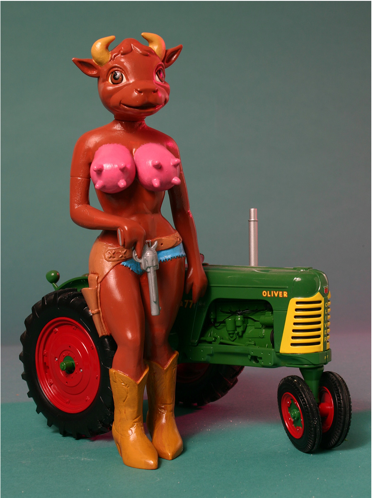

Exhibitions
FURORE, Dorothy Circus Gallery, Rome, Italy, March 16–April 20, 2008.
Notes
The work is documented on Dorothy Circus Gallery’s dedicated exhibition object page for Cowgirl Tractor, under FURORE, accessed April 5, 2026.

FURORE, Dorothy Circus Gallery, Rome, Italy, March 16–April 20, 2008.
The work is documented on Dorothy Circus Gallery’s dedicated exhibition object page for Cowgirl Tractor, under FURORE, accessed April 5, 2026.
